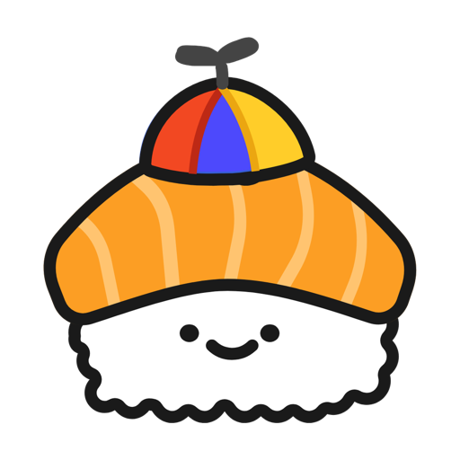

Motivate me
From the menu bar or tray, or with a shortcut: ⌃⌥⌘S on a Mac, Ctrl+Alt+Shift+S on Windows.

Sushi BuddyA tiny menu bar and tray app: a sushi in a propeller hat flies across your screen, says something nice and flies off. When you ask, or now and then on its own.
Free and open source · Version {{VERSION}} · macOS 14 or later on Apple Silicon · Windows 10 and 11 (ARM) · Homebrew and more


From the menu bar or tray, or with a shortcut: ⌃⌥⌘S on a Mac, Ctrl+Alt+Shift+S on Windows.
Every 15 minutes to every 4 hours, if you like. Everything it does on its own starts off.
A nudge after 30 to 90 minutes at the computer, a welcome back after time away, and a Pomodoro timer.
It holds off during a Focus, a call, a presentation, or while you're away.
Click it mid-flight for an extra spin and hearts. Everything around it still takes your clicks.
Good morning, Friday, a streak of days. Change any of it to what you'd like to hear.
Kateryna Anisimova drew five seasonal sushis, and each one moves its own way. By the calendar, the sushi changes by itself. Or pick one in Settings to fly all year. Click one to see it fly.
With the Claude Code plugin, the sushi flies when a long turn finishes ("Claude's done in my-app!") and when Claude needs your permission. Install it once, in a terminal:
claude plugin install sushi-buddy --marketplace NikolajMosbaek/sushi-buddyYour own scripts can fly it too:
curl -d 'Deployed! 🚀' http://127.0.0.1:7874/flyBoth only talk to Sushi Buddy on your own computer. Nothing leaves it.
macOS 14 or later, Apple Silicon. With Homebrew:
brew tap nikolajmosbaek/sushi-buddy https://github.com/NikolajMosbaek/sushi-buddy
brew trust nikolajmosbaek/sushi-buddy
brew install --cask sushi-buddyOr download the zip, unzip it and move Sushi Buddy to Applications. It's signed and notarized by Apple, so it opens like any app you download, and it keeps itself up to date.
Windows 10 or 11. Download the zip for your PC:
Unzip it anywhere and run Sushi Buddy.exe. It isn't code-signed, so the first time Windows says "Windows protected your PC": choose More info, then Run anyway. Then find the sushi in the tray.
No accounts, no ads, no tracking across apps or sites. Anonymous usage statistics only if you turn them on (from 1.8). What it looks at, such as whether you're on a call, stays on your computer. Privacy details
Sushi Buddy is free and open source. If it makes your day, you can tip the sushi on Ko-fi 🍣. A tip unlocks nothing, and the app never asks for one.